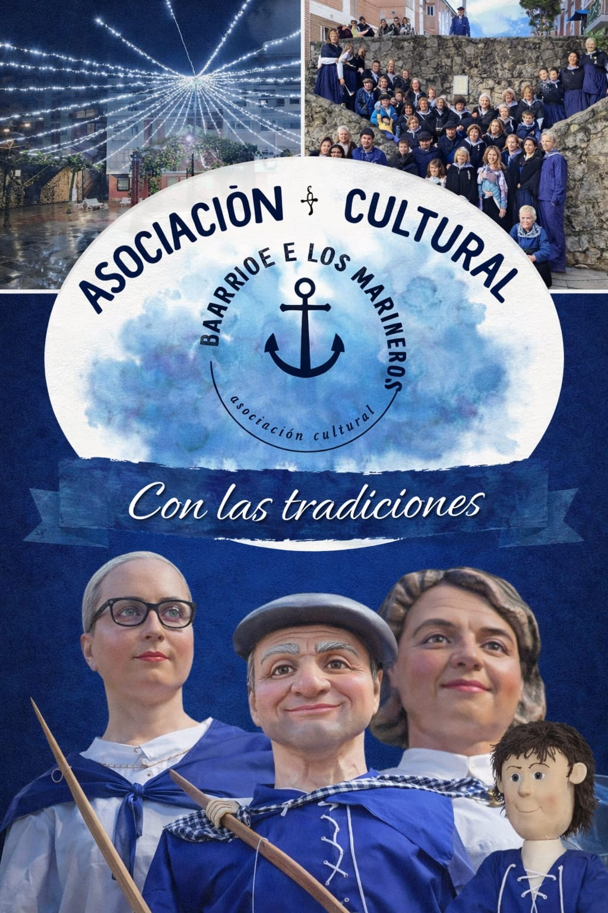

📅 Todos los Viernes
Taller de Gigantillas: ¡Crea nuestra tradición!
¿Quieres aprender a bailar y cuidar de nuestras Gigantillas? Únete al taller impartido por Lucía Dogén Aragón, donde compartimos la pasión por nuestras figuras más emblemáticas.
Es una actividad perfecta para todas las edades, donde trabajamos para que el folclore de nuestro barrio siga recorriendo las calles de Castro.
Lugar: Centro Juvenil "El Camarote", Castro Urdiales.
Horario: Viernes, de 17:00 a 19:00 horas.